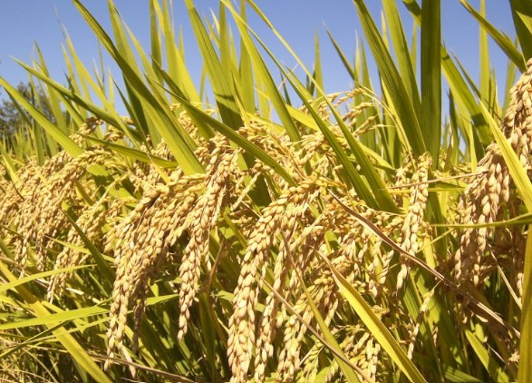
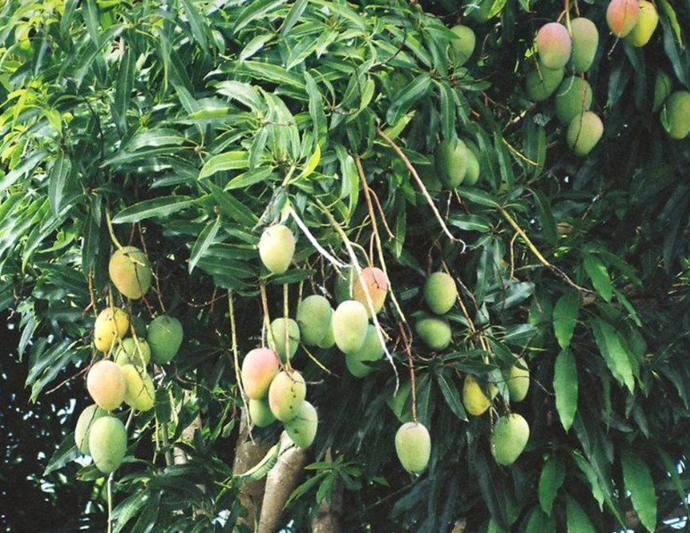
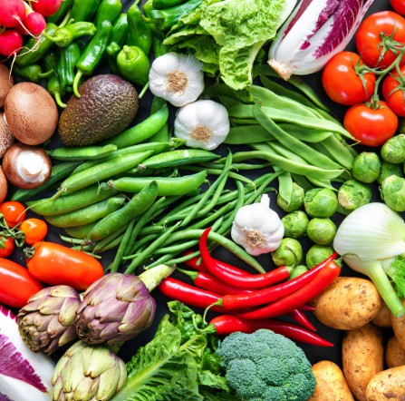
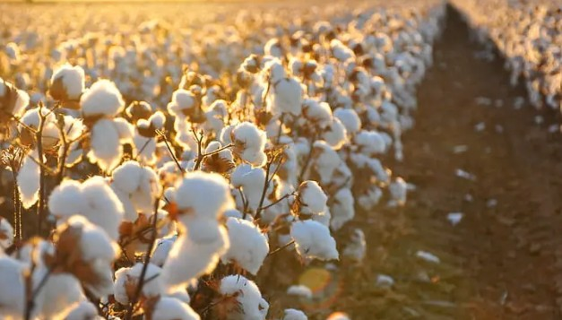

Major Crop Categories
Explore different categories of agricultural crops.
🌾 Grains
Learn about grain crops, cultivation requirements, and harvesting methods.
🍎 Fruits
Explore fruit varieties, growing conditions, nutritional values, and uses.
🥕 Vegetables
Discover vegetable crops and their cultivation and harvesting information.
🌿 Cash Crops
Explore commercially important crops and their potential uses.
Featured Crop Information
Detailed information about selected crops.

🌾 Rice
Category: Grain
Varieties: Different rice varieties can be selected according to local conditions.
Cultivation: Land preparation, suitable seeds, water management, and crop care are important.
Soil: Suitable soil conditions should be considered.
Harvesting: Harvest when the crop reaches appropriate maturity.
Nutritional Value: An important source of carbohydrates.
Uses: Staple food and various food products.

🥭 Mango
Category: Fruit
Varieties: Different mango varieties can be selected according to local conditions.
Cultivation: Suitable varieties and appropriate growing conditions are important.
Soil: Suitable soil conditions should be considered.
Harvesting: Harvest according to fruit maturity.
Nutritional Value: Provides vitamins and other nutrients.
Uses: Fresh consumption and different food products.

🥕 Vegetables
Category: Vegetable
Varieties: Different vegetable varieties are suitable for different growing conditions.
Cultivation: Proper planting, watering, soil care, and crop maintenance are important.
Soil: Suitable soil should be selected for the crop.
Harvesting: Harvest vegetables at the appropriate stage of maturity.
Nutritional Value: Vegetables can provide important nutrients.
Uses: Used in a wide range of meals and food products.

🌿 Cash Crops
Category: Cash Crop
Varieties: Crop selection depends on local conditions and farming objectives.
Cultivation: Appropriate cultivation practices should be followed for effective production.
Soil: Soil requirements vary according to the crop.
Harvesting: Harvest according to the maturity and requirements of the crop.
Nutritional Value: Depends on the specific crop.
Uses: Primarily grown for commercial and economic purposes.